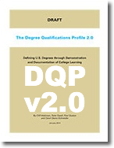

About The DQP 2.0
|  | The Degree Qualifications Profile v2.0By Cliff Adelman, Peter Ewell, Paul Gaston and Carol Geary Schneider Version 2.0 of a framework for defining the learning and quality that college degrees should signify. Download The Full Publication (709.85 KB) --OR-- Read It Online |
The Degree Qualifications Profile v2.0
This new draft of the Degree Qualifications Profile, DQP 2.0, represents many months of diligent effort on the part of its authors, Cliff Adelman, Peter Ewell, Paul Gaston and Carol Geary Schneider. It also reflects the thoughtful input of scores of individuals and organizations who have reviewed and used the DQP since publication of its “beta” version in 2011.
During the past three years, the DQP has been used in various ways by faculty members at more than 400 colleges and universities. These field trials have yielded significant feedback about the DQP ― feedback that has done much to inform and improve this latest version.
With all of its improvements, however, the purpose and structure of the document are unchanged. The DQP remains what it always has been: a framework for defining the high-quality learning that college degrees should signify at the associate, bachelor’s, and master’s degree levels. Similarly, DQP 2.0 is a work in progress — a tool whose utility Lumina Foundation seeks to enhance as we continue the effort to ensure the quality of postsecondary education by focusing on student learning.
To that end, we have created a website, www.luminafoundation.org/dqp, where interested parties are urged to share comments and suggestions about this version of the DQP. Written comments will be accepted at the website until March 15. Lumina will use this feedback to further enhance the DQP in preparation for the next iteration of the document, which we plan to publish in the fall of 2014.
In conjunction with that publication ― which will incorporate postsecondary certificates into the qual- ifications framework — Lumina also plans to unveil a variety of resources and activities that will help faculty members, accreditors and others as they use the DQP.
We’re very pleased with the progress this document represents, and we’re grateful to the authors who have worked so hard to bring it about. We also want to thank two advisers who have assisted in refin- ing this version of the DQP: Tim Birtwistle, professor emeritus at Leeds Metropolitan University; and Keith Bird, senior fellow at the Corporation for a Skilled Workforce.
The efforts of these dedicated experts ― and the innovative spirit of the growing numbers of faculty members and other practitioners who are using the DQP — are more than commendable. They demon- strate a genuine commitment to ensuring that college-level credentials reflect the rigor, relevance and clarity that students and society need.
Again, we urge you to be part of that ongoing effort by providing your feedback on this document. If you’re participating in an event at which the DQP is being used or discussed, simply jot down your comments on the next page and submit them to us. Or visit www.luminafoundation.org/dqp before March 15 and share your thoughts.
Thank you,
Lumina Foundation